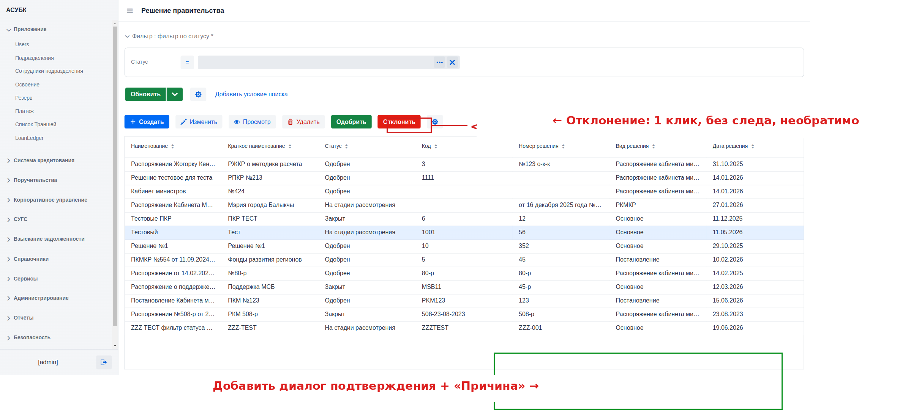
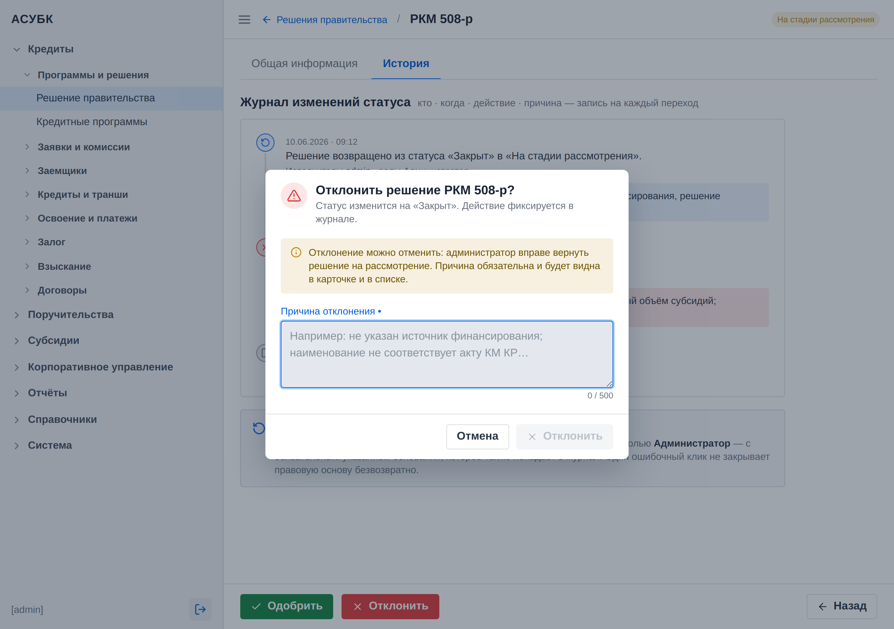

Документ для согласования · Версия 1.0 · 20.06.2026 · Тестовая среда https://fkftest.okmot.kg/
Содержание
Назначение задачи
Как сейчас (проблема)
Что предлагаем
Правила и поведение
Как это увидит пользователь
Критерии приёмки
Открытые вопросы
1. Назначение задачи
«Отклонить» — это необратимое действие над юридически значимой записью.
Сейчас оно выполняется мгновенно, без подтверждения и без указания причины,
а вернуть запись из закрытого состояния через интерфейс невозможно. Задача —
защитить это действие: добавить подтверждение, обязательную причину,
журнал аудита всех переходов статуса и управляемую обратимость.
2. Как сейчас (проблема)
Факт (дефект P1-03, проверено 2026-06-17). Кнопка «Отклонить»
срабатывает мгновенно — без диалога подтверждения и без поля причины.
Запись сразу прыгает в статус «Закрыт», а действие необратимо из UI
(кнопки «Одобрить» и «Изменить» становятся неактивны). Реальный случай:
тест-запись РКМ 508-р была случайно отклонена при проверке и
не восстановилась через интерфейс.
3. Что предлагаем
Обернуть отклонение в модальный диалог подтверждения с обязательной
причиной, выводить причину и автора в карточке и списке, фиксировать каждый
переход статуса в журнале аудита (этот же журнал закрывает аудит загрузки
файла из R1) и дать администратору управляемую обратимость — возврат
записи из «Закрыт» обратно «На рассмотрении» с обязательной записью в журнал.
4. Правила и поведение
Параметр
Правило
Подтверждение
Перед отклонением — модальный диалог подтверждения с явными кнопками (защита от случайного клика).
Причина отклонения
Обязательное поле «Причина отклонения»; без него кнопка «Отклонить» недоступна.
Видимость причины
Причина видна в просмотре записи и в списке.
Журнал аудита
По каждому переходу статуса (одобрение/отклонение/реактивация) — кто, когда, действие, причина. Этот же журнал закрывает аудит загрузки файла из R1.
Обратимость
Администратор (по роли) может вернуть запись из «Закрыт» обратно «На рассмотрении» с обязательной записью в журнал.
Расхождение с R7. R7 делает «Закрыт»/«Отклонён» терминальными
статусами, а обратимость предлагает через «Дублировать» отклонённое в
новый черновик. При реализации нужно выбрать ОДНУ модель обратимости
(см. R7) — административный возврат (R2) или дублирование (R7).
5. Как это увидит пользователь
1Выбрать запись и нажать «Отклонить»
Пользователь выбирает запись в статусе «На рассмотрении»
и нажимает «Отклонить».
2Подтверждение с причиной
Появляется модал подтверждения с обязательным
полем «Причина отклонения»; пока причина не заполнена, кнопка «Отклонить»
недоступна (макет: mockups/decision-reject.html).
3Причина видна в карточке и списке
После отклонения причина и автор отклонения
видны в карточке записи и в общем списке.
4История действий
Все переходы статуса доступны на вкладке «История»
(увязано с R6).

Текущее поведение списка: «Отклонить» без подтверждения (дефект P1-03).Карточка решения: место для журнала аудита и истории переходов статуса (увязано с R6).
Совет. Обязательная причина — это не бюрократия, а защита: она объясняет
будущему проверяющему, почему запись была закрыта, и кто принял решение.

Как должно выглядеть: диалог «Отклонить» с обязательной причиной и журналом (макет mockups/decision-reject.html).
6. Критерии приёмки
Перед отклонением показывается диалог подтверждения.
Поле «Причина» обязательно; без него кнопка «Отклонить» недоступна.
Причина отклонения видна в просмотре записи и в списке.
Каждый переход статуса пишется в журнал (кто / когда / действие / причина).
Администратор может вернуть запись из «Закрыт» в «На рассмотрении» с записью в журнал.
Модель обратимости согласована с R7 (используется одна модель).
7. Открытые вопросы
Обязателен ли комментарий-причина также при «Вернуть на доработку» (см. R7)?
Какая роль вправе выполнять реактивацию записи?
Финальная модель обратимости — административный возврат (R2) или «Дублировать» (R7)?